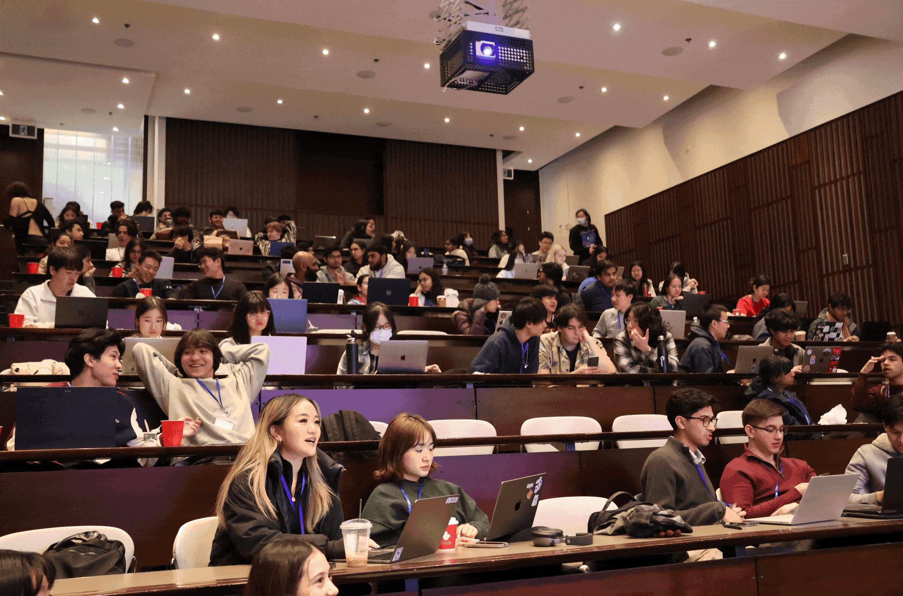
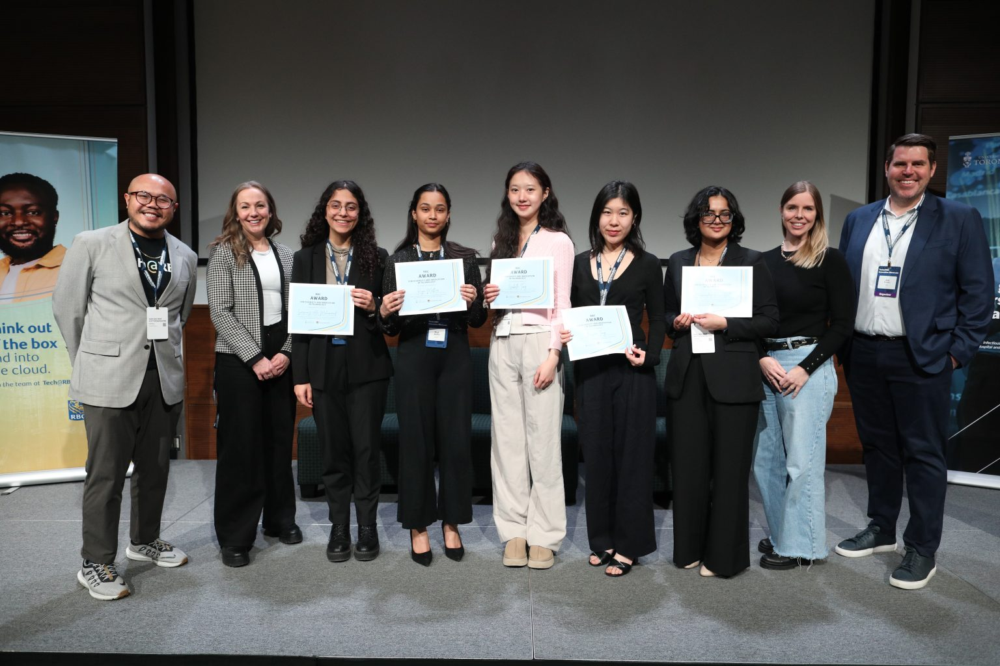
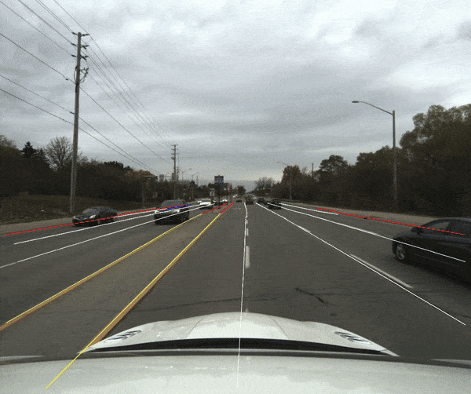
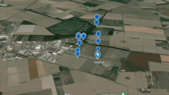

Jessica Tang

▹ My research focuses on aligning intelligent systems with human values and developing interpretability and verification methods that support AI policy and governance.
▹ I am a fourth year Machine Intelligence student in Engineering Science at the University of Toronto.
▹ Previously, I interned at Microsoft Research, where I led a project on multi-agent interpretability and influence tracing.
▹ I founded illuminAI, a community exploring the intersection of computer science, art, and the societal impacts of AI.
▹ Outside of research, I perform and write songs!
Research
Research projects archive.
Other
Highlights
Projects outside of research!

UofT AI Ethics Hackathon
illuminAI
Hosted 180 students across Ontario to develop ethical AI systems.

Winner of Scholarship for Diversity and Innovation in Technology
Royal Bank of Canada
One of top 5 undergrad students selected.

Lane Detection Research for Autonomous Vehicles
Toronto Robotics and AI Lab, aUToronto
Developing algorithms for real-time lane detection and tracking.

ESA CanSat Competition
Canadian Space Agency, European Space Agency
Developing a can-sized satellite for the ESA CanSat Competition.
Music
Some recorded performances.